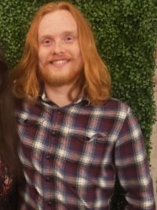

William C. Newman
I am a sixth year PhD student in mathematics at The Ohio State University. My advisor is Hsian-Hua Tseng.
Research Interests
I work in algebraic geometry. My thesis work deals with intersection theory on moduli spaces. My other work, past and present, is on various topics within algebraic geometry, most of which deal with aspects of the Chow groups/cohomology of varieties. I am also interested in combinatorics and number theory.
Preprints
Mentoring
I helped create and currently sit on the board of OSU Cycle, which is a mentoring program designed to pair mathematics graduate students with undergraduate students to do research.
CV
Here is my CV.
Minicourse
In May 2025, I ran a minicourse on Voevodsky's mixed motives at OSU titled "Motives in May" with Jake Huryn. The website can be found here.
Where you may have met me
- Dec 2025 KOI @ University of Kentucky
- Nov 2025 AlGeCom @ OSU
- Oct 2025 Enumerative Geometry, Intersection Theory & Beyond @ OSU
- Sep 2025 Combinatorics and Geometry of Moduli of Curves @ UIUC
- Jul 2025 Summer Research Institute in Algebraic Geometry @ CSU
- Jun 2025 Arithmetic Statistics @ OSU
- Jun 2025 Workshop of the Kentucky-Ohio Algebra Alliance @ OSU
- May 2025 Arithmetic, K-Theory, and Algebraic Cycles @ OSU
- Mar 2025 GAGS @ UGA
- Nov 2024 AlGeCom @ Umich
- Oct 2024 Tevelev Degrees @ UIUC
- Aug 2024 Richmond Geometry Meeting @ VCU
- May 2024 Workshop of the Kentucky-Ohio Algebra Alliance @ UKentucky
- May 2024 Local Systems in Algebraic Geometry @ OSU
- Jul 2023 AGNES Summer School-Intersection Theory on Moduli Spaces @ Brown
- Jun 2023 Arithmetic, Birational Geometry, and Moduli Spaces @ Brown
- May 2023 Workshop of the Kentucky-Ohio Algebra Alliance @ OSU
- Oct 2022 AlGeCom @ UIUC
- Jul 2022 Derived Categories, Moduli, and Hyperkähler Varieties @ Umich